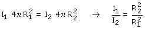

La energía que pasa, por unidad de tiempo,
a traves de una esfera con centro en el foco se obtendrá
multiplicando la intensidad de la onda por la superficie de la esfera
La energia que, por unidad de tiempo, pasa a través de la
esfera 1 tiene que ser la misma que pasa a través de la esfera
2

La intensidad de una onda esférica es inversamente proporcional
al cuadrado de la distancia al foco |